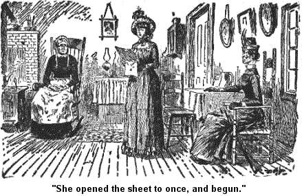
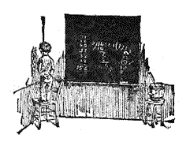

ARDELLA TUTT AND HER MOTHER.
But to resoom and continue on. I was a settin' one day, after it wuz all decided, and plans laid on; I wuz a settin' by the fire a mendin' one of Josiah's socks. I wuz a settin' there, as soft and pliable in my temper as the woosted I wuz a darnin' 'em with, my Josiah at the same time a peacefelly sawin' wood in the wood-house, when I heard a rap at the door and I riz up and opened it, and there stood two perfect strangers, females. I, with a perfect dignity and grace (and with the sock still in my left hand) asked 'em to set down, and consequently they sot. Then ensued a slight pause durin' which my two gray eyes roamed over the females before me.
The oldest one wuz very sharp in her face and had a pair of small round eyes that seemed when they were sot onto you to sort a bore into you like two gimlets. Her nose was very sharp and defient, as if it wuz constantly sayin' to itself, "I am a nose to be looked up to, I am a nose to be respected, and feared if necessary." Her chin said the same thing, and her lips which wuz very thin, and her elbow, which wuz very sharp.
Her dress was a stiff sort of a shinin' poplin, made tight acrost the chest and elboes. And her hat had some stiff feathers in it that stood up straight and sort a sharp lookin'. She had a long sharp breast-pin sort a stabbed in through the front of her stiff standin' collar, and her knuckles sot out through her firm lisle thread gloves, her umberell wuz long and wound up hard, to that extent I have never seen before nor sense. She wuz, take it all in all, a hard sight, and skairful.
The other one wuzn't no more like her in looks than a soft fat young cabbage head is like the sharp bean pole that it grows up by the side on, in the same garden. She wuz soft in her complexion, her lips, her cheeks, her hands, and as I mistrusted at that first minute, and found out afterwards, soft in her head too. Her dress wuz a loose-wove parmetty, full in the waist and sort a drabbly round the bottom. Her hat wuz drab-colored felt with some loose ribbon bows a hangin' down on it, and some soft ostridge tips. She had silk mits on and her hands wuz fat and kinder moist-lookin'. Her eyes wuz very large and round, and blue, and looked sort o' dreamy and wanderin' and there wuz a kind of a wrapped smile on her face all the time. She had a roll of paper in her hand and I didn't dislike her looks a mite.
Finally the oldest female opened her lips, some as a steel trap would open sudden and kinder sharp, and sez she: "I am Miss Deacon Tutt, of Tuttville, and this is my second daughter Ardelia. Cordelia is my oldest, and I have 4 younger than Ardelia."
I bowed real polite and said, "I wuz glad to make the acquaintance of the hull 7 on 'em." I can be very genteel when I set out, almost stylish.
"I s'pose," says she, "I am talkin' to Josiah Allen's wife?"
I gin her to understand that that wuz my name and my station, and she went on, and sez she: "I have hearn on you through my husband's 2d cousin, Cephas Tutt."
"Cephas," sez she, "bein' wrote to by me on the subject of Ardelia, the same letter containin' seven poems of hern, and on bein' asked to point out the quickest way to make her name and fame known to the world at large, wrote back that he havin' always dealt in butter and lard, wuzn't up to the market price in poetry, and that you would be a good one to go to for advice. And so," sez she a pointin' to a bag she carried on her arm (a hard lookin' bag made of crash with little bullets and knobs of embroidery on it), "and so we took this bag full of Ardelia's poetry and come on the mornin' train, Cephas'es letter havin' reached us at nine o'clock last night. I am a woman of business."
The bag would hold about 4 quarts and it wuz full. I looked at it and sithed.
"I see," sez she, "that you are sorry that we didn't bring more poetry with us. But we thought that this little batch would give you a idee of what a mind she has, what a glorious, soarin' genus wuz in front of you, and we could bring more the next time we come."
I sithed agin, three times, but Miss Tutt didn't notice 'em a mite no more'n they'd been giggles or titters. She wouldn't have took no notice of them. She wuz firm and decided doin' her own errent, and not payin' no attention to anything, nor anybody else.
"Ardelia, read the poem you have got under your arm to Miss Allen! The bag wuz full of her longer ones," sez she, "but I felt that I must let you hear her poem on spring. It is a gem. I felt it would be wrongin' you, not to give you that treat. Read it Ardelia."
I see Ardelia wuz used to obeyin' her ma. She opened the sheet to once, and begun.

Jest the minute Ardelia stopped readin' Miss Tatt says proudly: "There! haint that a remarkable poem,?"
Sez I, calmly, "Yes it is a remarkable one."
"Did you ever hear anything like it?" says she, triumphly.
"No," sez I honestly, "I never did."
"Ardelia, read the poem on Little Ardelia Cordelia; give Miss Allen the treat of hearin' that beautiful thing."
I sort a sithed low to myself; it wuz more of a groan than a common sithe, but Miss Tutt didn't heed it, she kep' right on --
"I have always brought up my children to make other folks happy, all they can, and in rehearsin' this lovely and remarkable poem, Ardelia will be not only makin' you perfectly happy, givin' you a rich intellectual feast, that you can't often have, way out here in the country, fur from Tuttville; but she will also be attendin' to the business that brought us here. I have always fetched my children up to combine joy and business; weld 'em together like brass and steel. Ardelia, begin!"
So Ardelia commenced agin'. It wuz wrote on a big sheet of paper and a runnin' vine wuz a runnin' all 'round the edge of the paper, made with a pen.
Jest as soon as Ardelia stopped rehearsin' the verses, Miss Tutt sez agin to me:
"Haint that a most remarkable poem?"
And agin I sez calmly, and trutbfully, "Yes, it is a very remarkable one!"
"And now," sez Miss Tutt, plungin' her hand in the bag, and drawin'
out a sheet of paper, "to convince you that Ardelia has always had this
divine gift of poesy -- that it is not, all the effect of culture and high
education -- let me read to you a poem she wrote when she wuz only a mere
child," and Miss Tutt read:
"LINES ON A CAT
"WRITTEN BY ARDELIA TUTT,
"At the age of fourteen years, two months and eight days.
"Oh Cat! Sweet Tabby cat of mine;
6 months of age has passed o'er thee,
And I would not resign, resign
The pleasure that I find in you.
Dear old cat!"
"Don't you think," sez Miss Tutt, "that this poem shows a fund of passion, a reserve power of passion and constancy, remarkable in one so young?"
"Yes," sez I reasonably, "no doubt she liked the cat. And," sez I, wantin' to say somethin' pleasant and agreeable to her, "no doubt it was a likely cat."
"Oh the cat itself is of miner importance," sez Miss Tutt. "We will fling the cat to the winds. It's of my daughter I would speak. I simply handled the cat to show the rare precocious intellect. Oh! how it gushed out in the last line in the unconquerable burst of repressed passion -- `Dear old cat!' Shakespeare might have wrote that line, do you not think so?"
"No doubt he might," sez I, calmly, "but he didn't."
I see she looked mad and I hastened to say: "He wuzn't aquainted with the cat."
She looked kinder mollyfied and continued:
"Ardelia dashes off things with a speed that would astonish a mere common writer. Why she dashed off thirty-nine verses once while she wuz waitin' for the dish water to bile, and sent 'em right off to the printer, without glancin' at 'em agin.'
"I dare say so," sez I, "I should judge so by the sound on 'em."
"Out of envy and jealousy, the rankest envy, and the shearest jealousy, them verses wuz sent back with the infamous request that she should use 'em for curl papers. But she sot right down and wrote forty-eight verses on a `Cruel Request,' wrote 'em inside of eighteen minutes. She throws off things, Ardelia does, in half an hour, that it would take other poets, weeks and weeks to write."
"I persume so," sez I, "I dare persume to say, they never could write 'em."
"And now," sez Miss Tutt, "the question is, will you put Ardelia on the back of that horse that poets ride to glory on? Will you lift her onto the back of that horse, and do it at once? I require nothin' hard of you," sez she, a borin' me through and through with her eyes. "It must be a joy to you, Josiah Allen's wife, a rare joy, to be the means of bringin' this rare genius before the public. I ask nothin' hard of you, I only ask that you demand, demand is the right word, not ask; that would be grovelin' trucklin' folly, but demand that the public that has long ignored my daugther Ardelia's claim to a seat amongst the immortal poets, demand them, compel them to pause, to listen, and then seat her there, up, up on the highest, most perpendiciler pinnacle of fame's pillow. Will you do this?"
I sat in deep dejection and my rockin' chair, and knew not what to say -- and Miss Tutt went on:
"We demand more than fame, deathless, immortal fame for 'em. We want money, wealth for 'em, and want it at once! We want it for extra household expenses, luxuries, clothing, jewelry, charity, etc. If we enrich the world with this rare genius, the world must enrich us with its richest emmolients. Will you see that we have it! Will you at once do as I asked you to? Will you seat her immegately where I want her sot?
Sez I, considerin', "I can't get her up there alone, I haint strong enough." Sez I, sort a mekanikly, "I have got the rheumatez."
"So you scoff me do you? I came to you to get bread, am I to get worse than a stun -- a scoff?"
"I haint gin you no scoff," sez I, a spunkin' up a little, "I haint thought on it. I like Ardelia and wish her well, but I can't do merikles, I can't compel the public to like things if they don't."
Sez Miss Tutt, "You are jealous of her, you hate her."
"No, I don't," sez I, "I haint jealous of her, and I like her looks first-rate. I love a pretty young girl," sez I candidly, "jest as I love a fresh posy with the dew still on it, a dainty rose-bud with the sweet fragrance layin' on its half-folded heart. I love 'em," sez I, a beginnin' to eppisode a little unbeknown to me, "I love 'em jest as I love the soft unbroken silence of the early spring mornin', the sun all palely tinted with rose and blue, and the earth alayin' calm and unwoke-up, fresh and fair. I love such a mornin' and such a life, for itself and for the unwritten prophecis in it. And when I see genius in such a sweet, young life, why it makes me feel as it duz to see through all the tender prophetic beauty of the mornin' skies, a big white dove a soarin' up through the blue heavens."
Sez Miss Tutt, "You see that in Ardelia, but you wont own it, you know you do."
"No!" sez I, "I would love to tell you that I see it in Ardelia; I would honest, but I can't look into them mornin' skies and say I see a white dove there, when I don't see nothin' more than a plump pullet, a jumpin' down from the fence or a pickin' round calmly in the back door-yard. Jest as likely the hen is, as the white dove, jest as honerable, but you mustn't confound the two together."
"A hen," sez Miss Tutt bitterly. "To confound my Ardelia with a hen! And I don't think there wuz ever a more ironieler `hen' than that wuz, or a scornfuller one."
"Why," sez I reasonably. "Hens are necessary and useful in any position, both walkin' and settin', and layin'. You can't get'em in any position hardly, but what they are useful and respectable, only jest flyin'. Hens can't fly. Their wings haint shaped for it. They look some like a dove's wings on the outside, the same feathers, the same way of stretchin' 'em out. But there is sunthin lackin' in 'em, some heaven-given capacity for soarin' an for flight that the hens don't have. And it makes trouble, sights and sights of trouble when hens try to fly, try to, and can't!
"At the same time it is hard for a dove to settle down in a back yard and stay there, hard and tegus. She can and duz sometimes, but never till after her wings have been clipped in some way. Poor little dove! I am always sorry for 'em to see 'em a walkin' round there, a wantin' to fly -- a not forgettin' how it seemed to have their wings soarin' up through the clear sky, and the rush of the pure liquid windwaves a sweepin' aginst 'em, as they riz up, up, in freedom, and happiness, and glory. Poor little creeters.
"Yes, but doves can, if you clip their wings, settle down and walk, but hens CAN'T fly, not for any length of time they can't. No amount of stimulatin' poultices applied to the ends of their tail feathers and wings can ever make 'em fly. They can't; it haint their nater. They can make nests, and fill them with pretty downy chicks, they can be happy and beautiful in life and mean; they can spend their lives in jest as honerable and worthy a way as if they wuz a flyin' round, and make a good honerable appearance from day to day, till they begin to flop their wings, and fly -- then their mean is not beautiful and inspirin'; no, it is fur from it. It is tuff to see 'em, tuff to see the floppin', tuff to see their vain efforts to soar through the air, tuff to see 'em fall percepitously down onto the ground agin. For they must come there in the end; they are morally certain to.
"Now Ardelia is a sweet pretty lookin' girl, she can set down in a cushioned arm-chair by a happy fireside, with pretty baby faces a clusterin' around her and some man's face like the sun a reflectin' back the light of her happy heart. But she can't sit up on the pinnacle of fame's pillow. I don't believe she can ever get up there, I don't. Honestly speakin', I don't."
"Envy!" sez Miss Tutt, "glarin', shameless envy! You don't want Ardelia to rise! You don't want her to mount that horse I spoke of; you don't want to own that you see genius in her. But you do, Josiah Allen's wife, you know you do -- "
"No," sez I, "I don't see it. I see the sweetness of pretty girlhood, the beauty and charm of openin' life, but I don't see nothin' else, I don't, honest. I don't believe she has got genius," sez I, "seein' you put the question straight to me and depend a answer; seein' her future career depends on her choice now, I must tell you that I believe she would succeed better in the millionary trade or the mantilly maker's than she will in tryin' to mount the horse you speak on.
"Why," sez I, candidly, "some folks can't get up on that horse, their legs haint strong enough. And if they do manage to get on, it throws 'em, and they lay under the heels for life. I don't want to see Ardelia there, I don't want to see her maimed and lamed and stunted so early in the mornin' of life, by a kick from that animal, for she can't ride it," sez I, "honestly she can't.
"There is nothin' so useless in life, and so sort a wearin' as to be a lookin' for sunthin' that haint there. And when you pretend it is there when it haint, you are addin' iniquity to uselessness; so if you'll take my advice, the advice of a wellwisher, you will stop lookin', for I tell you plain that it haint there."
Sez Miss Tutt, "Josiah Allen's wife, you have for reasens best known to your conscience baulked my hopes of a speedy immortality. You have willfully tried to break down my hopes of an immense, immediate income to flow out of them poems for luxuries, jewelry, charity, etc. But I can at least claim this at your hands, I demand honesty. Tell me honestly what you yourself think of them poems."
Sez I (gettin' up sort a quick and goin' into the buttery, and bringin' out a little basket), "Here are some beautiful sweet apples, won't you have one?"
"Apples, at such a time as this;" sez Miss Tutt
"When the slumberin' world trembles before the advancin' tread of a new poet -- When the heavens are listenin' intently to ketch the whispers of an Ardelia's fate -- Sweet apples! in such a time as this!" sez she. But she took two.
"I demand the truth," sez she. "And you are a base, trucklin' coward, if you give it not."
Sez I, tryin' to carry off the subject and the apples into the buttery; "Poetry ort to have pains took with it."
"Jealousy!" sez Miss Tutt. "Jealousy might well whisper this. Envy, rank envy might breathe the suspicion that Ardelia haint been took pains with. But I can see through it," sez she. "I can see through it."
"Well," sez I, wore out, "if they belonged to me, and if she wuz my girl, I would throw the verses into the fire, and set her to a trade."
She stood for a minute and bored me through and through with them eyes. Why it seemed as if there wuz two holes clear through my very spirit, and sole; she partly lifted that fearful lookin' umberell as if to pierce me through and through; it wuz a fearful seen.
At last she turned, and flung the apple she wuz a holdin' onto the floor at my feet -- and sez she, "I scorn 'em, and you too." And she kinder stomped her feet and sez, "I fling off the dust I have gethered here, at your feet."
Now my floor wuz clean and looked like yeller glass, almost, it wuz so shinin' and spotless, and I resented the idee of her sayin' that she collected dust off from it. But I didn't say nothin' back. She had the bag of poetry on her arm, and I didn't feel like addin' any more to her troubles.
But Ardelia, after her mother had swept out ahead, turned round and held out her hand, and smiled a sweet but ruther of a despondent and sorrowful smile, and I kissed her warmly. I like Ardelia. And what I said, I said for her good, and she knew it. I like Ardelia.
Well, Miss Tutt and Ardelia went from our house to Eben Pixley's. They are distant relatives of hern, and live about 3 quarters of a mile from us. The Pixleys think everything of Ardelia but they can't bear her mother. There has been difficulties in the family.
But Ardelia stayed there mor'n two weeks right along. She haint very happy to home I believe. And before she went back home it wuz arranged that she should teach the winter's school and board to Miss Pixley's. But Miss Pixley wuz took sick with the tyfus before she had been there two weeks -- and, for all the world, if the deestrict didn't want us to board her. Josiah hadn't much to do, so he could carry her back and forth in stormy weather, and it wuz her wish to come. And it wuz Josiah's wish too, for the pay wuz good, and the work light -- for him. And so I consented after a parlay.
But I didn't regret it. She is a good little creeter and no more like her mother than a feather bed is like a darnin' needle. I like Ardelia: so does Josiah.
